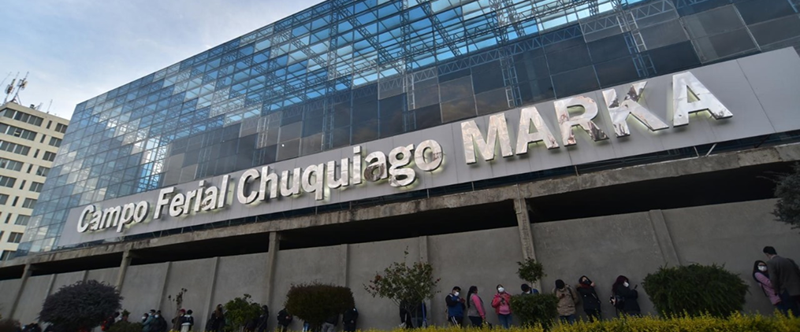

EL
PESANERVIOS
GRILLO VILLEGAS
Música


Lugar
Auditorio Illimani - Ubicado en el campo Ferial Chuquiago Marka.
Zona Bajo Següencoma.
 Google maps
Google maps
Horarios
Tienes chance de ir en estos horarios.
| Únicamente presentaciones en la noche. | ||
|---|---|---|
| Viernes | 27 de junio | 19:30 |
| Sábado | 28 de junio | 19:30 |
Transporte.
¡Usa la línea verde del teleférico!.
| Usa la línea roja del teleférico!. | |
|---|---|
| Tomar de | La línea más cercana a tu ubicación. |
| Transbordo | A la Línea verde (estaciones Del Libertador). |
| Quedarse en | Línea Verde, Estación Alto Obrajes. |
-Servicio de bus.
-Minibús que diga “Mallasa”, “Irpavi”, “Los Pinos”.
-Taxi! solo dile que “hasta el Chuquiago marka”.
-Micro que diga “Calacoto” y te bajas en la pasarela del Chuquiago.
Precios
Que no te duela el bolsillo, la entrada cuesta:
| Según el sitio web podríamos pagar | ||
|---|---|---|
| Nacionales | Bs. 30 | |
| Extranjeros | Bs. 20 | ¡Entradas anticipadas en preventa con descuento!. |
Restricciones de edad
No digo que no puedas... pero no te van a dejar entrar
¡Este evento no tiene restricciones
de edad! No tienes excusa.
Despéjate un cacho,
¡vamos juntos!
¿Aun no te convence?
¡Mira todo lo que hay!


Ya que estamos aquí, sabias que...
Ya que estamos aquí, sabias que...
Según se comenta sobre la obra...
Según se comenta sobre la obra...
“Cada canción es un puente que conecta pasado y presente, y eso se siente en el escenario”, contó en una entrevista reciente
“Queremos destacar nuestro compromiso detalle técnico y lumínico que ayudan a que la música se sienta en el cuerpo y el alma del público.”
Si usas teleférico, la estación más cercana es Alto Obrajes, de ahí un caminito corto y listo. Mi consejo es que te des el gusto de llegar con calma, encontrar tu asiento sin apuros y sentir cómo el aire se va cargando de nostalgia mientras esperás que empiece el primer acorde.
El público que ya ha vivido alguna edición de El Pesanervios sabe que no es un simple concierto, es un ritual, muchos cuentan que salen con la piel erizada y la sensación de haber viajado en el tiempo, abrazados por canciones que son importantes para ellos. Y no faltan los que terminan cantando con lágrimas en los ojos, porque ese vínculo con la música es algo que va más allá de las palabras.
Y el equipo de iluminación, liderado por José Flores, que crea atmósferas que transportan, entre luces cálidas y sombras profundas.
Dicen que durante los shows, si cierras los ojos, puedes sentir la presencia de esas bandas que pasaron por ahí.
Grillo Villegas vuelve a las tablas con el corazón en la mano y la voz cargada de recuerdos, este disco que celebra 25 años no es solo un álbum, es parte de la historia del rock nacional.
Perfecto para un reencuentro como este, donde cada acorde se siente cerca, íntimo, como si la música fuera un puente entre las personas, entre el ayer y el ahora.
La producción de estos conciertos está a cargo de un equipo que conoce bien el valor de esta celebración, entre ellos está Camila Rojas, encargada de sonido, que asegura que cada detalle técnico es cuidado para que el público sienta la música en cada fibra.
El Auditorio Illimani no es solo un espacio para conciertos, es un lugar donde la historia del rock boliviano parece latir con cada nota.
Y no es solo historia o magia, el sonido del Illimani es legendario, se dice que es tan bueno que hasta el último rincón puede captar el susurro más leve de una guitarra o el latido más sutil de un bajo.
Así que, cuando estés ahí, sentate cómodo, bajá el celular, o grabá un poquito si te emocionas, no te juzgaría si lo haces.
Por ultimo mira lo que dicen mis otros amigos

No olvides dejar también el tuyo!


Agrega tu opinión del evento y mi guía!
Increíble lo que se vivió anoche. Manuel tiene una forma de conectar con la gente que te deja con la piel erizada. La puesta en escena, los músicos, todo impecable. ¡Gracias por venir a La Paz!
Fue como una terapia musical. Salí renovado, pensando en letras, imágenes, momentos. Manuel tiene ese poder raro de hacerte sentir acompañado incluso en lo que no sabías que te dolía. Gracias por eso.
Nunca había visto a Manuel en vivo, y honestamente no esperaba que fuera tan potente. Me voló la cabeza cómo traduce la intensidad del disco Pánico a una puesta en escena tan precisa. No hay nada de show vacío ni espectáculo por espectáculo. Cada canción tiene peso, tiene intención, y te arrastra con ella. Los músicos están en un nivel altísimo, cada arreglo tiene alma. Y me conmovió mucho ver al staff trabajar con tanta dedicación detrás del escenario, sin protagonismo, pero siendo clave para que todo fluyera con una naturalidad que uno, como espectador, agradece profundamente
Aún no supero lo de anoche. Qué manera de interpretar, de transmitir tanto con cada canción. ‘Pánico’ en vivo es otra cosa, mucho más visceral, más intensa. Y el público estaba tan conectado que parecía un solo corazón latiendo con cada tema. De verdad, gracias Manuel por esa entrega tan honesta.
Lloré con ‘Te doy una canción’. Era como si la cantara solo para mí.
Fui con mi mamá, que es fan de Manuel hace años, y salí yo también absolutamente tocado por el show. Es increíble cómo logra atravesar generaciones con letras tan profundas y arreglos tan bien hechos. Lo que más me impactó fue cómo una sala entera podía pasar del silencio absoluto al estallido de aplausos en segundos. No es fácil lograr eso, y él lo hace sin esfuerzo aparente, solo con autenticidad. Lo sentí muy presente, muy humano, muy generoso. Y eso se contagió. A la salida todos hablaban bajito, como si no quisiéramos romper el hechizo. Qué hermoso regalo nos hizo anoche.
El juego de luces y las proyecciones visuales fueron un complemento perfecto. Nada distraía, todo sumaba. Se notaba que hay una visión artística clara detrás del show, y que el equipo la supo ejecutar con mucho cuidado.
Fui sin muchas expectativas y salí con el alma llena. No solo por la música —que fue increíble—, sino por la atmósfera que se creó. El Teatro Municipal se sentía íntimo, como si estuviéramos en una sesión privada. Todo fluyó tan natural, desde las luces hasta el sonido. Se notaba el cariño con el que montaron todo.
Hay conciertos que se te olvidan al día siguiente, y hay otros que te quedan como tatuaje emocional. Lo de Manuel García en La Paz fue de esos segundos. Una narrativa impecable, un recorrido emocional que nos hizo pasar por la melancolía, la ternura, la rabia, la esperanza... todo eso en poco más de una hora. Salí temblando, literal. Me tocó, me revolvió, me sanó un poquito. No puedo dejar de pensar en lo importante que es tener estos espacios donde el arte se hace con tanto respeto, tanto compromiso y tanto amor por la audiencia. Qué necesario.